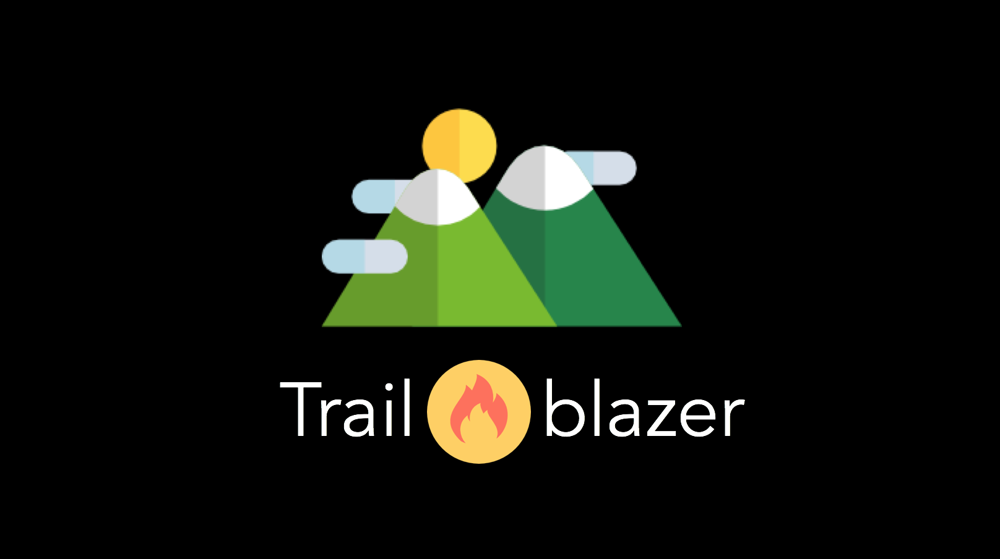

During my sophomore year of college, I took a course called Design Thinking at the Thayer School of Engineering, which acts as a foundation course on the cognitive strategies and methodologies behind the creative design practice. Each week, I worked on a new project, either independently, or in a randomly-generated group of people, and each project served as an introduction to the design of products, services, interactive technology, environments, and experiences. Throughout the course, my classmates and I discussed and implemented topics including design principles, human need-finding, heuristics, thinking by analogy, scenario building, visual thinking, and the studies of experienced thinkers. Below, you'll find a few of my favorite projects from the class!
Roller Coaster Project
Assignment:
Design a new theme park ride using original concepts for a novel transportation experience.
Goal:
To maximize the originality, quality, and overall time (seconds) of your roller coaster prototype using creative functional elements as well as a compelling theme concept.
Materials:
Three sheets of foam-core, hot glue, tape, wooden dowel, 10 rubber bands, colored paper for design. A ping-pong ball served as the conceptual representation of the vehicle pod or rider.
Result:
After a solid 48-hours of building, and a massive all-nighter, my team came up with a time-travel themed roller coaster design.

Design Research 1: Improving Carrying-Devices
Assignment:
Dartmouth students navigate multiple different environments and activities every day. They have to carry many things with them, but at times the current systems for carrying things can be bulky, awkward, inconvenient, and even unhealthy. Essentially,
we want to help Dartmouth students better manage the things they need to carry with them by creating better carrying devices.
Upon receiving this assignment, my partner and I conducted interviews with extreme users such
as athletes who carry gym bags on top of their backpacks and hikers with large packs on their backs, to the regular majority of students who generally carry a single backpack around all day. Eventually, though, we realized that a carrying device
could refer to anything, really, ranging from a card holder on the back of your phone to a lunch box, laundry basket to trash bin. Ultimately, we settled on a problem that we saw many students deal with on a daily basis--tangled earphones.
Problem:
Dartmouth students need a way to store and retrieve earbud-headphones easily.
Establishing user-need:
Background:
In 2001, Steve Jobs announced the world’s first ever iPod. Within the past 16 years, Apple has gained a monopoly over the personal tech industry. According to a study in 2012, 50 percent of all households in the United States are home to at least one
Apple product. Basically, over 55 million homes have at least one iPod, iPhone, iPad, or Mac. With each iteration of Apple products, focus is given to the main piece of technology: the phone or the laptop. Their companion components, such as
chargers and headphones, however, remain relatively the same. Despite improvements to Apple’s hardware and software, Apple had failed to fix a crucial pain-point for many of its billion users: the dreaded headphone tangle.
Physicists have actually done a study in which they tumbled a wire in a box hundreds of times and then used mathematical knot theory to analyze them. They identified 120 different types of knots and concluded that stiffer wires were less likely
to form such insane tangles. Interviews with Dartmouth students confirmed this theory. We realized that the issue of tangled wires was particularly a problem for college students who are always on-the-go and don’t have much time to spend untangling
wires.
Solution:

We decided to put a mini pouch on a backpack strap for quick and easy access. The pouch is detachable and can be used in a variety of ways. Inside this pouch is a spool mechanism that allows the user to roll their headphones in or out.


User-feedback + User-DEMO:
Next Steps:
If I were to continue with this project, I would work on making the pouch itself less bulky, implement an easier wrapping method, and attach a smoother zipper.
Design Research 2: Digital Dreams
How might we use computing and connectivity to improve human experiences?
Assignment:
To work on the "front-end" conceptual process of need-finding and envisioning a digital innovation to enable new and better experiences for its users.
My partner and I first began by brainstorming 100+ human experiences we could
potentially innovate--mind-mapping through the night--asking ourselves, "Who is being left behind?"


After selecting and solidifying an opportunity, our next step was to begin the conceptual design process. After storyboarding a use-case, we "presented the future with our innovation in it" to the rest of the class.
Proposed Solution:
Imagine that someone in your family has been diagnosed with a serious illness. The treatment and care will be long-term, and will undoubtedly bring many changes to your everyday life. You are expected to be one of the primary caregivers for your family
member. This means that on top of everything you already do, such as school or work, meal preparation, grocery shopping, and taking care of the rest of the family, you will have to attend doctor’s appointments and various consultations as well
as attend to the basic needs for the family member who is sick.
All of these things quickly become overwhelming, especially when you factor in the mental and emotional labor of the situation. When you realize that you
need help…who do you call?
When something like this happens, people in the community may want to help, but it can be awkward to know what to say or do. This makes supporting caregivers an even trickier situation.
Initially,
my partner and I focused on ways to improve caregiving through computing and connectivity? When we considered the challenge of caregiving, we talked extensively about the issue of asking for help. There is a lot of pressure placed on the individual
to perform in Western society. Asking for help can be seen as admitting that you failed to do it on your own.
So we moved to our next "How Might We” statement…How might we make asking for help easier for caregivers? There are a
few key goals that we identified as necessary to make asking for support easier for caregivers. The system needed to organize communities to help, and then synthesize this information in a way that was not overwhelming to the caregiver. Another
goal that we identified was the overall mental and emotional support of caregivers. We believe our system does that through bringing together people that most want to help them.
This is where Supporting Roles comes in.
- The calendar is a comprehensive overview of all the tasks.
- The notifications toolbar on the left pops up when people have committed to tasks that need approval by the caregiver.
- Then we go to the tasks page, where the caregiver or another administrator on the site is able to input tasks for the volunteers.
- Next is the planner. While looking at the entire day’s schedule, you can also approve pending tasks.
- This circles page shows the different groups connected with the family. Supporting Roles tracks the tasks of each volunteer.
- The defining feature of Supporting Roles is its pattern recognition. Supporting Roles tracks the tasks of volunteers and, based on this information, makes suggestions for future tasks.
- Let’s say that Mrs. Smith always picks up the kids from school on Thursdays, or Ben drops off dinner every other week on Mondays. Supporting Roles would send them reminder emails of the upcoming tasks and make it easier to commit to the same tasks. This helps maintain some normalcy in the family schedule during an otherwise hectic time.
Next Steps:
Looking forward, we envision iCal integration for easier task-management as well as specialization for different cultural understandings. Asking for help may not have the same implications or challenges in one culture compared to another. We can also see
Supporting Roles take on different forms depending on the situation. For example, helping a family who recently welcomed a child into the world or a family undergoing a recent loss.
Both my partner and I have had similar experiences watching one of our parents battle with disease, which is what prompted the beginning stages of Supporting Roles. As we continued to build the site, we realized that some websites,
like CaringBridge and Lotsa Helping Hands, were accomplishing a lot of what we thought was important to help caregivers. But even though these sites organized community members, they still didn’t solve our main how-might-we:
How Might We make asking for help easier for caregivers?
We wanted to automate asking for help to a certain extent, because having to constantly input tasks means feeling like you’re constantly asking people for help. This is where our 'pattern recognition’ system came in. With the automated suggestions, caregivers can spend less time inputting tasks and more time doing the things that matter, like spending time with their loved ones and taking time to recharge.
Technology takes care of the details so that you don’t have to.
Design Research 3: Dartmouth Research
Assignment
For my final group project, our challenge was to explore opportunities to improve the experiences of first-generation students at Dartmouth College.
Process
From the 40+ interviews that we’ve conducted over the past two weeks, we can confirm that first generation college students have a lot to say about the topic.
We heard...
- One story about a student who had to work multiple jobs on campus in order to support her family back at home when her father was unemployed.
- One story about a father telling his daughter to be a doctor, lawyer, or engineer because those were “practical” paths and would ensure financial security.
- And one story about a student who went on Tinder dates to guarantee food for herself during breaks because the dining halls were closed.

We heard stories about being too intimidated to going into office hours, strained relationships with parents, feeling lost in a sea of Canada Goose Jackets, and not having the same networks and opportunities as legacy students.
But besides these stories of struggle, we also heard stories about accomplishments and hope that should be celebrated.
There are bright spots in the first generation community on campus that need to be recognized. These are the bright spots that we need to highlight so that other first generation students know that they have the potential to succeed in whatever field they choose. So how can we give them that feeling?
We propose...

Trailblazer is an annual multilingual publication that highlights the stories and experiences of first generation students, parents, faculty and alumni of Dartmouth.
Through Trailblazer, students, faculty, and families can read about the dark spots, like the story about the student who had to work multiple jobs, but also the bright spots: the student who got his research trip fully funded, the student who continued to pursue a computer science major despite her self-doubts, and the student who maintained a 4.0 while working three jobs.
We want to celebrate the grit and resilience of first generation students and connect them with people who have shared similar stories.
How does it work?

First-gen students, alumni, faculty, and parents of those first-gen students share their stories with the team at Trailblazer, who work with FYSEP and OPAL. They compile the most compelling stories, and distribute them to all students, parents, faculty, and alumni of Dartmouth College at the beginning of each school year.
What will be the impact?
Through sharing these stories, Trailblazer strives to create a community of empathy.
We decided to use stories because stories impact people on an emotional level that is necessary for meaningful change in attitudes and behaviors. We’re striving to increase awareness within the entire Dartmouth community by making known those stories
that are too often kept silent.
Currently, students feel like parents just don’t understand their experiences at Dartmouth. But with Trailblazer, parents can read stories, in their first languages, about students and alumni
who have overcome challenges and achieved success, as well as stories about life at Dartmouth, taking the burden off their children to try to explain the complex bubble of Dartmouth. Parents might even begin to feel comfortable enough to initiate
college related conversations, too. With Trailblazer, parents can:
- Understand the importance of a liberal arts education
- See how majors lead to careers
- Learn what college life is like
Some students feel like professors are intimidating. But Trailblazer will help professors learn more about students’ backgrounds and experiences to increase their awareness. Professors can empathize with students’ experiences they may not have known about
before and feel encouraged to reach out.
Alumni can serve as powerful role models. Trailblazer will engage Alumni who have experiences, tools, and resources that they can share with current students. Also, their stories
can inspire first generation students. Trailblazer can connect the brainpower Dartmouth cultivates and truly make an impact.
Lastly, peers can be exclusive. Reading Trailblazer increases sensitivity to other’ backgrounds in order
to build a more understanding community.
Throughout their experiences at Dartmouth, all students learn and grow. We do not want the stories of first generation students to be forgotten when they graduate. Through Trailblazer, we
can empower writers to celebrate their experiences and identities, instill empathy in non-first generation professors and students, and reassure parents that their children can be successful in following their passions. Most importantly, Trailblazer
can inspire first generation students by celebrating their grit and resilience, and by increasing their confidence in their own identities.
We hope that through highlighting the diverse stories of Dartmouth’s trailblazers, we can create a community of empathy and instill feelings of pride and empowerment.
Reflection
For ten weeks, I studied topics ranging from the art of brainstorming to user-research, acquired the skills to present thoughtful innovation and digital dreams, and have even tried my hand at sketching. At the very start of the term, I was motivated by
the ingenuity of my peers in the DeBono squares project, and was immediately overwhelmed by the sheer size of the roller coaster project. Learning how to work with people who have different work ethics from me was challenging, but equally rewarding.
The last three projects consisted of design research, and each of them progressively became more abstract. Conducting ethnographic research, I learned, is not an easy task, but I am glad that it was a major element towards the end of the course.
From these projects, I have learned to incorporate aspects of design-thinking into my daily life here at Dartmouth.
One of the main aspects of this course that I looked forward to and appreciated was group work. Each
brainstorming session made me feel as though I was part of a think-tank—ready to take on any task. I experienced flow whenever I built upon someone else’s ideas, or vice versa. I’ve always known that I learn best from my peers, and this class
allowed for that to happen organically. I am thankful for the various friendships I have made and the opportunity to gain insight from people I never thought I would familiarize myself with. Regardless of where I end up in the future, I know
that this course has provided me with the skills needed to think critically, innovate readily, visualize widely, prototype repeatedly, and design effectively—and I could not have asked for more.